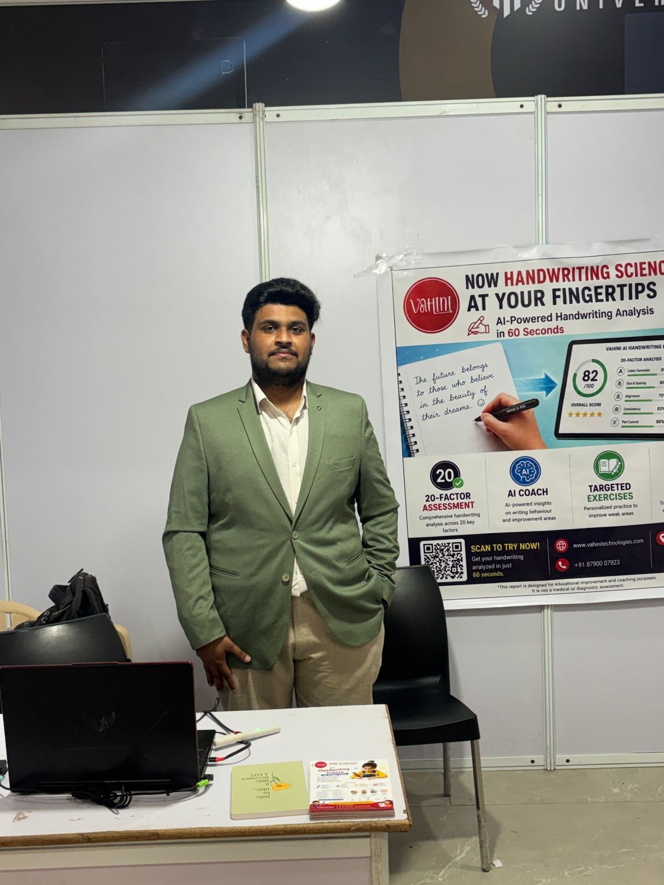

COVER
CONTENTS
THE PROBLEM
MOTION DATASET · FIELD NOTEBOOK
no. 584433

Property of: Investors & Partners
RTIH, Tirupati · AP Incubated 2026
Hyderabad · 2025
Vahini
Technologies
Technologies
Every AI company is built on data. We are building the world's first longitudinal handwriting-motion dataset, collected from real humans writing on ordinary paper. The pen is how we collect it; the dataset is what we own.
Open the notebook →
MADE IN INDIA
INNOVATE
PAGE i
Contents
{{ n.num }}
{{ n.label }}
వందే మాతరం
{{ n.num }}
{{ n.label }}
THE PROBLEM
India's first handwriting-motion dataset, a first in the country's history.
see what it solves →
one signal → many products ✎
CHAPTER 01 · THE PROBLEM
The data nobody is building
THE HUMAN COST
Children spend years failing to form letters. Teachers grade by eye. Therapists track recovery on gut feel. Handwriting struggle is everywhere, and invisible to software.
THE ROOT CAUSE
Machines can read a finished page, but none can see how the hand moved to make it. The data linking movement, feedback and improvement over time simply does not exist.
THE OPENING
Build that dataset and the unsolvable turns routine: objective coaching, early screening, generative handwriting. Own it now, or watch it get built without us.
1ST IN INDIA
No one is collecting how humans learn to write. We are the first.
fig. 1 · why the data wins
EVERYONE TODAY
App
→Reports
a dead endTHE PRIZE · NOBODY IS BUILDING IT
Longitudinal motion + outcome dataset
movement, intervention & learning, over years
↓
Handwriting foundation model
↓
Education · rehab · robotics · tutors
thousands of future AI apps
OpenAI didn't win with ChatGPT. It won with the dataset underneath it.
CHAPTER 02 · WHY NOW
Why the window is open
{{ w.y }}
{{ w.t }}
{{ w.d }}
fig. 2 · the data that's already claimed
Every modality has an owner, except one
TextCommonCrawl · Books
ImagesLAION · ImageNet
VoiceLibriSpeech · podcasts
Handwriting motionunclaimed
There is no scrape for how a hand moves on paper. It has to be collected, by us, now.
CHAPTER 03 · THE MOAT
Why no one can copy it
Apple, Google and Samsung all have handwriting samples. None of them have what connects the samples together.
WHAT ONLY WE CONNECT
Motion, how the hand actually moves
+Teacher feedback & interventions
+Exercises the writer practised
+Improvement over months and years
+Age, language & learning stage
=A longitudinal learning trajectory
Why can't they just do it? A balanced motion corpus can't be scraped, it must be physically collected: pens, field teams, per-pen calibration, signed consent, school partnerships and longitudinal tracking over years. That is the moat.
WHAT THE FOUNDATION MODEL POWERS
Many markets, one model
Banking & fraud
Signature & behavioural biometrics. Motion can't be forged like a shape can.
Health screening
Fine-motor biomarkers studied for Parkinson's, dysgraphia & stroke recovery.
Identity & auth
Behavioural biometrics, plus bot & liveness detection. Human motion is hard to fake.
EdTech at scale
Literacy & handwriting assessment for millions of learners, in their own script.
Generative & robotics
Teach machines to write like a human hand, the ground-truth no scrape can give.
Motion SDK
License the engine. Partners build on our motion API, no hardware required.
One dataset, many markets, entered in sequence (see Go-to-Market). The pen seeds the data; the data is the company.
CHAPTER 04 · COMPETITION
Everyone reads. No one records.
Strong players recognise finished handwriting. None capture the motion on ordinary paper, over time, in Indian scripts.
player
reads
writing
writing
captures
motion
motion
longi-
tudinal
tudinal
on
paper
paper
{{ r.name }}
{{ r.note }}
{{ c.g }}
✓ yes~ partial✗ no
WHY THE GAP STAYS OPEN
Their incentives point the other way
Big Tech sells screens
Their handwriting lives on glass. Ordinary-paper motion has no place in an iPad or Pixel roadmap.
Researchers stop at the paper
STABILO's OnHW proved the method, then published and moved on. No balanced corpus, no Indian scripts, no product.
AI labs only have images
OCR and vision models read pixels. They have no way to synthesise the motion they never recorded.
We compete on the one column no one else fills: balanced motion on paper, over years, in India's scripts.
CHAPTER 05 · DATASET METHODS
How we build the dataset
1
Prompt a character
The companion app shows one character at a time. The contributor writes it once on plain A4 paper, at a natural speed.
2
Capture & segment
Sixteen motion axes stream live over Bluetooth. Pen-down force marks where each sample begins; lifting the pen ends it.
3
Auto-label
The prompted character becomes the ground-truth label, saved with writer ID, language and start-and-end timestamps.
4
Calibrate & protect
Each pen is calibrated for offset and drift; motion plots catch noise and mislabels. Stored under the DPDP Act, deletable on request.
A field operation, not a web scrape. ✎
WHY IT'S RIGOROUS
Balanced by design
every script × every age × both hands
script ↓
kids
teens
adults
seniors
{{ r.name }}
✓
✓
✓
✓
Balanced
No demographic overfit.
Ground-truth
Motion ↔ letter, time-synced.
Consent-first
DPDP, revocable.
HOW IT SCALES
>98% labelled-quality after QC
1 collector→~500 pages/day→~20k chars/day→~₹15/sample
50k
Phase 1 · English
500k
Phase 2 · + Hindi
5M
Phase 3 · 6 scripts
protocol follows the proven IMU-pen standard (STABILO OnHW · Punjabi IMU studies), adapted for Indian scripts
CHAPTER 06
How Vahini Works
Vahini is a normal-looking pen that understands how you write. It turns the motion of your hand into meaning, then coaches you, all on ordinary paper. (The sensor engineering lives in Patents & Specs.)
{{ s.n }}
{{ s.t }}
{{ s.d }}
fig. 2 · dual-IMU pen
● IMU-A (tip)
● IMU-B (barrel)
Two sensors work together so the pen reads true motion on any surface, the hard engineering that makes the simple promise above possible.
CHAPTER 07 · WRITING DNA
Writing DNA
Every page produces a 20-factor signature, as distinct as a fingerprint. Today it is scored by computer vision from a simple scan; the pen's motion research makes it deeper still.
one signature, twenty factors
WHY THE NUMBERS MATTER
Specs that earn their keep
208 Hz
Handwriting changes within milliseconds; this catches a tremor or hesitation a camera never sees.
16 axes
Pressure, tilt, speed and rhythm, all from a single natural stroke, not a flat 2-D image.
any paper
No tablet, no dot-pattern, no app to learn, the page you already use is the only requirement.
Six scripts

the real Vahini pen · sensor board, USB & barrel
CHAPTER 08
Patents & IP
GRANTED
INDIAN PATENT
No. 584433
“Handwriting Recognition with an Intelligent Ballpoint Pen using IMU Sensors.” 20-year protection.
FIG. 1 · SENSING ASSEMBLY · PATENT 584433
① Dual IMU · gyro + accel
② Magnetometer
③ MCU · on-pen recognition
④ OLED display · live readout
⑤ Tip-force sensor
Pending applications
PENDING
#{{ p.no }}
{{ p.t }}
Credentials
{{ c.k }}{{ c.v }}
HONEST SCOPE
The patent protects the hardware sensing method. It does not cover the dataset, the AI models or the learning loop, those are defended by execution and data, not paper.
protected through 2045
CHAPTER 09 · UNIT ECONOMICS
ILLUSTRATIVE · REPLACE
Where the money comes from
revenue arrives in sequence, not all at once
{{ p.ph }}{{ p.who }}
{{ p.name }}
WHO PAYS FIRST
Schools and parents, today, for handwriting coaching. That pilot revenue funds the dataset that later licenses to enterprises.
COST PER DATASET SAMPLE
What one labelled sample costs
{{ r.k }}
{{ r.v }}
AND IT FALLS WITH VOLUME
{{ c.v }}
{{ c.n }}
Benchmark: STABILO's OnHW reached ~31k samples from 119 writers; we target balanced ages & both hands. Figures illustrative.
CHAPTER 10 · GO-TO-MARKET
Land soft, expand hard
A free analyser earns trust with parents, then we climb: classrooms, districts, states, and finally enterprise licensing.
{{ g.n }}
{{ g.t }}
{{ g.d }}
fig. · every stage feeds the dataset
The flywheel
More writers use the free analyser
↓
Each page adds balanced motion data
↓
A better model = better coaching
↓
Schools pay → funds more collection
The coaching product and the dataset grow each other. Distribution and the moat are the same motion.
CHAPTER 11 · TRACTION
Traction so far
Small but real: a granted patent, recognition, a live product in the field, and open pre-orders.
★
{{ r.t }}
{{ r.d }}
Milestones
{{ m.y }}
{{ m.t }}
CHAPTER 12
The Team
17 years in embedded systems, a granted patent, and three years living this problem, why this team can collect what others won't.
{{ t.i }}
{{ t.name }}
{{ t.role }}
“It began in May 2023 with one question. Could technology preserve the natural act of writing while making it more accessible?”
Malli Kosuri, Co-Founder & MD
it started with one question.
CHAPTER 13 · HARD QUESTIONS
The questions you'll ask
Answered before you have to ask them.
{{ q.n }}
{{ q.q }}
{{ q.a }}
…continued
{{ q.n }}
{{ q.q }}
{{ q.a }}
CHAPTER 14 · THE VISION
Where this goes
{{ v.tag }}
{{ v.t }}
{{ v.d }}
ONE SENTENCE TO REMEMBER
The pen is the instrument.
The dataset is the company.
The model is the future.
The dataset is the company.
The model is the future.
One motion signal, collected from real hands on ordinary paper, becomes the layer every machine uses to read, verify and generate human handwriting.
CHAPTER 15
Events & News
{{ n.date }}
{{ n.t }}
{{ n.d }}
catch us at the next demo!
out in the field
Vahini in action

DeepTech Award · Vizag

T-Hub, Hyderabad

ni-msme, Hyderabad

IIT expo · booth #72

MR Hub
CHAPTER 16
Get in touch
{{ c.k }}
{{ c.v }}
drop us a line, we reply fast!
Let's talk.
Investors and partners, we'd love to show you the pen writing live. Drop a line and we'll set up a demo.
info@vahinitech.com
vahinitechfirm@gmail.com
vahinitechfirm@gmail.com
The end of
the notebook.
the notebook.
But the start of the platform. One motion signal powers handwriting, digital paper, learning, healthcare and research.
↺ Back to the cover
Vahini Technologies
Hyderabad · vahinitech.com
RTIH, Tirupati · AP Incubated 2026
Made in India
{{ pageLabel }}
Vahini · field notes
{{ pageCounter }}